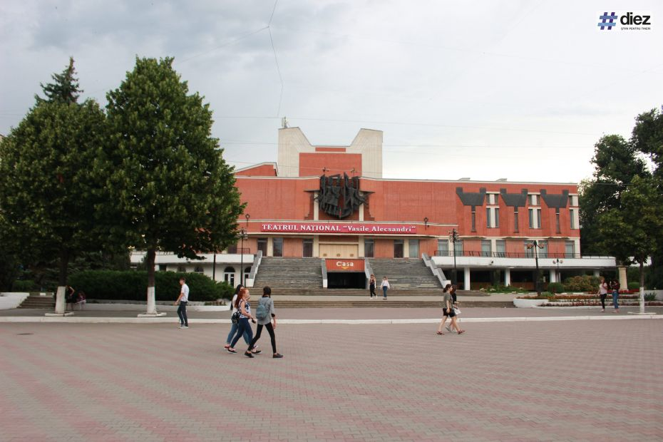
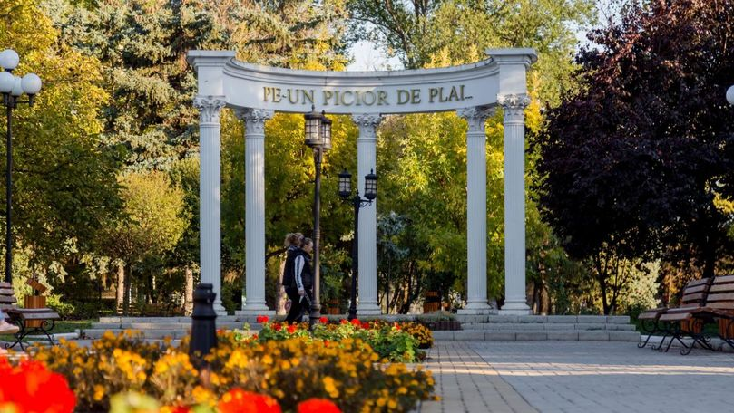
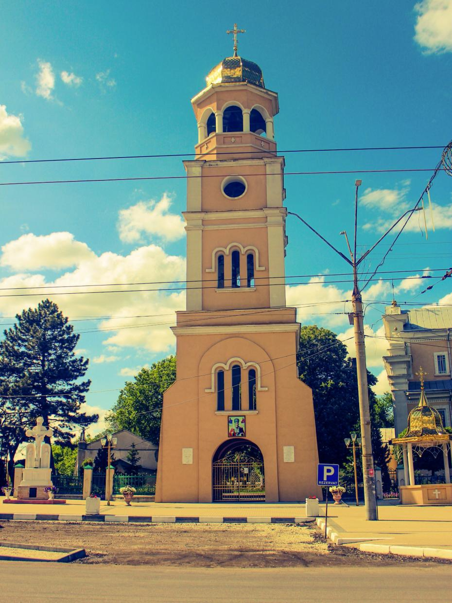

Explorează Bălțul
Teatrul Național Vasile Alecsandri

Teatrul Național „Vasile Alecsandri” din Bălți este principala instituție culturală din municipiu, fiind fondat oficial la 16 mai 1957. Acesta găzduiește spectacole de teatru clasic și contemporan, concerte și evenimente culturale diverse. Clădirea actuală a fost inaugurată în 1934 sub numele de Teatrul „Scala”, având inițial 659 de locuri și o acustică impecabilă. Evoluție: În 1966 a primit numele poetului Vasile Alecsandri, iar în 1990 a fost ridicat la rangul de Teatru Național. Arhitectură: Edificiul este un simbol al orașului, recunoscut pentru foaierul său decorat cu mozaic și sala de spectacole circulară.
Video cu mai multă informație
Aleea Clasicilor Culturii Naționale din Bălți

Aleea Clasicilor Culturii Naționale din Bălți, situată în scuarul de pe strada Independenței, este un simbol cultural central al orașului, fiind inaugurată în 2010 pentru a onora marii scriitori și oameni de artă români. Ansamblul este marcat la intrare de o arcadă monumentală cu cinci coloane, care poartă inscripția celebrului vers mioritic „Pe-un picior de plai...”, și găzduiește busturile unor figuri emblematice precum Mihai Eminescu, Ion Creangă, Grigore Vieru și Adrian Păunescu. Recent, în anul 2026, zona a beneficiat de un amplu proces de modernizare și reabilitare, prin care busturile au fost restaurate sau turnate în bronz pentru o mai bună conservare, iar spațiul a fost reamenajat cu mobilier urban modern, inclusiv leagăne și bănci, transformând aleea într-un loc de recreere popular și un punct de referință pentru evenimentele culturale din municipiu.
Video cu mai multă informație
Catedrala Sfântul Nicolae din Bălți

Catedrala „Sfântul Ierarh Nicolae” din Bălți, construită între 1791 și 1795 de boierul Alexandru Panaiti, este cel mai vechi monument istoric al orașului și un simbol arhitectural unic prin fuziunea stilului bizantin cu elemente catolice apusene. Situată chiar în centrul municipiului, aceasta servește drept catedrală episcopală și este renumită pentru faptul că hramul său, sărbătorit pe 22 mai, coincide cu Ziua Orașului Bălți. Deși a supraviețuit perioadei sovietice, clopotnița originală a fost demolată în 1962 și reconstruită abia în 1995, edificiul rămânând până astăzi inima spirituală și culturală a comunității locale.